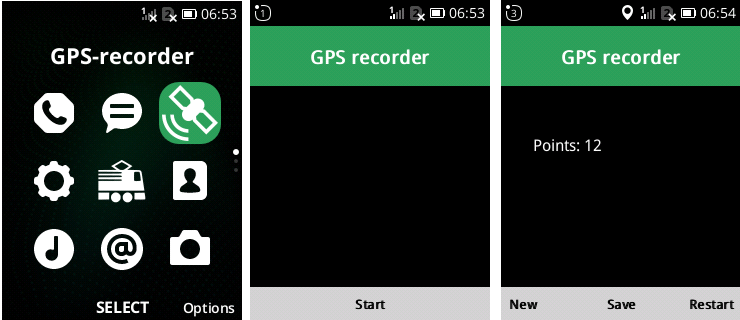
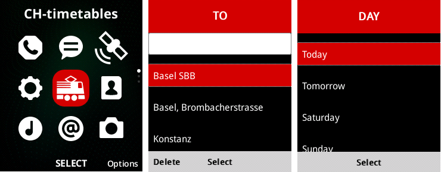
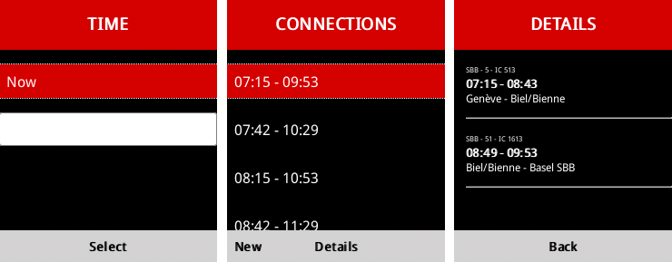

2019-06-03
My new phone is a banana
Since my ZTE running FirefoxOS died a couple of years ago, I have had an Android phone. We were never friends. Ever since FirefoxOS died, I have been hoping for a resurrection. Some time ago I stumbled upon KaiOS a fork of FirefoxOS that actually had users. Millions of users. Mostly thanks to the JioPhone that is "sold" in India for nothing. Litterally nothing, except for a deposit of ₹1500 (~€20). It is not available in Europe but this one is:

A stupid phone, as in not a "smart" phone. Just a phone or "feature phone", as it is called. Having fond memories of old Nokia phones, I did not hesitate, I bought one immediatly. Sometimes things are not as good as you remember, pressing a button a couple of times to write a letter is not as smooth as I remembered. I have never really mastered writing on a touchscreen but this is painful.
The real problem turned out to be that there is no obvious way to push your own apps. The app store is miserable, but I was not expecting to use it anyway. As far as I am concerned, the whole point of FirefoxOS was to create my own apps. And this fork does not let me do that. After some searching I found the banana hackers, a community that helped solve the problem. Not only do they provide a hack to install your own apps, there is even an alternative operating system, GerdaOS. Installing it was ridiculously easy. Took me less than half an hour, most of which I spent looking for a microSD to put it on.
Time to start hacking
I am not a huge mobile phone user, so my need for apps is pretty low. I used my previous phone for three things: browsing, recording my bike rides and look up public transport timetables. The phone already has a browser. The experience is pretty bad, the screen is tiny and you move the mouse with the arrow keys. It could work for emergencies but for reading while on the move, I will have to carry a book. Maybe that is a good thing. So I just need two apps: one to look up timetables and another to record my bike rides.
I already had an app to record GPS positions for FirefoxOS and just needed to adapt it. The documentation for KaiOS developers is rather underwhelming. It mostly consists of a "design guide" and links to Mozilla's "archive of obsolete content". The "simulator" is buggy but kind of works. The difference compared to FirefoxOS is that you have to use key navigation. And the screen is tiny. It does not leave much room for creative design and I find that rather liberating. You just need to focus on getting the job done.

For the timetables, there is an API from transport.opendata.ch. As I have been playing around with lit-element lately, I thought this was a nice little project to try it out. It worked fine in the browser but it did not work in the simulator or on the phone. I was puzzled. Why would it not work? And then I found this article explaining that KaiOS is based on a really old version of Firefox. The browser has evolved a lot since the OS based on it stopped being maintained. It would have been too much work to build on a recent version. They just build KaiOS on top of the last version FirefoxOS worked on... So no javascript modules and probably polyfills are needed for webcomponents. I rewrote my app in Preact.


If you are reading this on a phone running GerdaOS or KaiOS, I admire your patience. You can download the apps here:
EDIT
I have had the phone for a couple of weeks now and I am very happy with it. Everything works, battery lasts several days and, most important, I feel cool answering the phone by sliding it open. I still use the android phone to read the news in the morning. I don't miss it at all during the day.